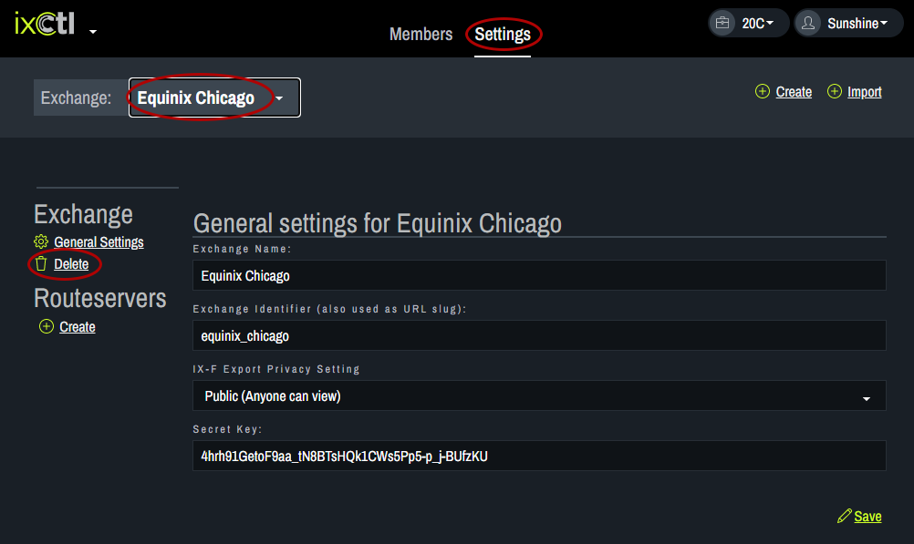
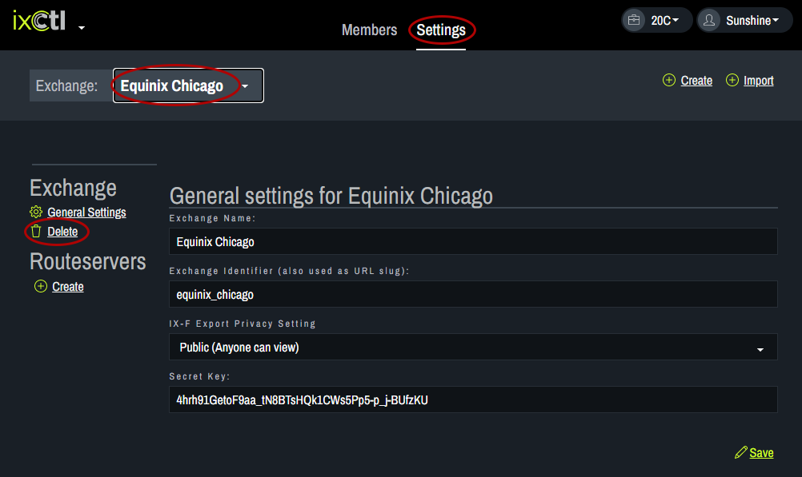

Delete Exchange
To remove an exchange, click on the Settings tab. Choose the exchange to be removed from the drop down list at the top of the page and click delete. 
To remove an exchange, click on the Settings tab. Choose the exchange to be removed from the drop down list at the top of the page and click delete. 